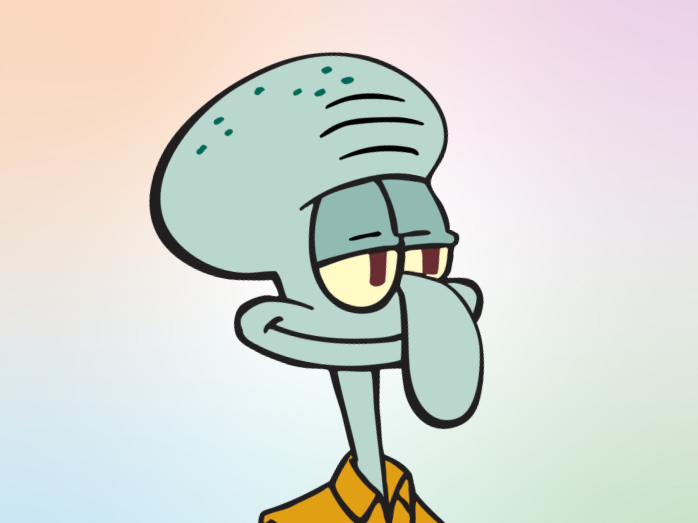

Squidward (aka Carlo)
Résident du 122 Conque Street, Bikini Bottom
Mes informations personnelles
- Nom complet : Squidward Johannes Tentacules
- Date de naissance : Dans les années 80
- Nationalité : Bikini Bottomienne
- État civil : Célibataire (et fier)
- Langues parlées : Français, Morse aquatique, Soupirs exaspérés
Objectif Professionnel
Obtenir un poste où mes talents artistiques et mon expertise en service clientèle seront enfin reconnus à leur juste valeur, dans un environnement respectant le silence et la dignité des travailleurs.
Expérience Professionnelle
- Caissier et Employé Polyvalent – Krusty Krab (1999 - Aujourd’hui)
- Artiste et Musicien – Auto-entrepreneur (Carrière en dents de scie depuis toujours)
- Chef d'Orchestre – Fondation Bikini Bottomienne des Arts (expérience fictive mais légitime à mes yeux)
Compétences
- Gestion du stress: Expertise en soupirs longs et lourds.
- Multitâche avancé: Capacité à servir un client tout en regrettant ses choix de vie.
- Maîtrise instrumentale: Clarinettiste passionné, victime de l’incompréhension artistique.
- Relations humaines: Talent inné pour détecter l’ennui et l’irritation chez autrui.
- Service client minimaliste: Répondre au strict nécessaire avec un enthousiasme mesuré.
Formation
- École des Beaux-Arts de Bikini Bottom (non diplômé)
- Académie de la Clarinette sous-marine (abandon au bout de trois cours)
- Formation accélérée en gestion des conflits (imposée par Mr. Krabs)
Centres d’Intérêt
- La musique (uniquement la clarinette)
- L’art (surtout le mien)
- Se plaindre de son travail
- Éviter ses voisins et collègues
- Rêver d’un monde sans Bob l’Éponge
Références
- Eugène Krabs (Employeur peu scrupuleux) – “Un employé correct tant qu’il ne demande pas d’augmentation.”
- Bob l’Éponge (Collègue irritant) – “Squidward est mon meilleur ami, même s’il ne le sait pas encore !”
- Patrick Étoile de Mer (Ami involontaire) – “Qui ça ?”
Contact 📩
Merci d'éviter.